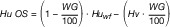
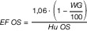

|
| EBrennstoff_BEHG | die Gesamtmenge der Brennstoffemissionen nach Abzug der nach den §§ 16 und 17 abzugsfähigen Brennstoffemissionen; |
| EBrennstoff_in Verkehr ,k | die Menge der auf einen in Verkehr gebrachten Brennstoff (k) entfallenden Brennstoffemissionen; |
| EBrennstoff_Doppelerfassung ,k | die nach § 16 abzugsfähige Menge an Brennstoffemissionen eines in Verkehr gebrachten Brennstoffs (k); |
| EBrennstoff_Doppelbelastung ,k | die nach § 17 abzugsfähige Menge an Brennstoffemissionen eines in Verkehr gebrachten Brennstoffs (k). |
 |
 |
| MengeBrennstoff_erneut_in_Verkehr | die nach den §§ 6 und 16 ermittelte Brennstoffmenge. |
 |
| EF | der Emissionsfaktor im Sinne von § 2 Nummer 11; |
| Hi | der Heizwert im Sinne von § 2 Nummer 14; |
| MengeBrennstoff_EU-ETS i | die im Kalenderjahr zum Einsatz in einer dem EU-Emissionshandel unterliegenden Anlage (i) gelieferte Brennstoffmenge; |
| BiomasseanteilEU-ETS i | der in der dem EU-Emissionshandel unterliegenden Anlage (i) anerkannte Biomasseanteil. |
| Nummer | Brennstoff | Nomenklatur | Umrechnungsfaktor | Heizwert | Heizwertbezogener Emissionsfaktor | |
|---|---|---|---|---|---|---|
| 1 | Benzin | 2710 12 außer 2710 12 31 und 2710 12 70 3811 11 10 3811 11 90 3811 19 00 3811 90 00 2707 10 2707 20 2707 30 2707 50 | Dichte: 0,755 t/1000 l | 43,5 GJ/t | 0,0729 t CO2/GJ | |
| 2 | Flugbenzin | 2710 12 31 | Dichte: 0,72 t/1000 l | 43,9 GJ/t | 0,0712 t CO2/GJ | |
| 3 | Gasöl | |||||
| 3a | Gasöl als Kraftstoff (Diesel) | 2710 19 29 bis 2710 19 48 2710 20 11 bis 2710 20 19 | Dichte: 0,845 t/1000 l | 42,8 GJ/t | 0,074 t CO2/GJ | |
| 3b | Gasöl zu Heizzwecken (Heizöl EL) | 2710 19 43 bis 2710 19 48 2710 20 11 bis 2710 20 19 | Dichte: 0,845 t/1000 l | 42,8 GJ/t | 0,074 t CO2/GJ | |
| 4 | Heizöl | |||||
| 4a | Heizöl als Kraftstoff (Heizöl S) | 2710 19 62 bis 2710 19 68 | 1 t/t | 39,5 GJ/t | 0,0797 t CO2/GJ | |
| 4b | Heizöl zu Heizzwecken (Heizöl S) | 2709 2710 19 51 bis 2710 19 68 2710 20 31 bis 2710 20 39 2710 20 90 | 1 t/t | 39,5 GJ/t | 0,0797 t CO2/GJ | |
| 5 | Flüssiggas | |||||
| 5a | Flüssiggas als Kraftstoff | 2711 12 2711 13 2711 14 2711 19 | 1 t/t | 46,0 GJ/t | 0,0655 t CO2/GJ | |
| 5b | Flüssiggas zu Heizzwecken | 2711 12 2711 13 2711 14 2711 19 | 1 t/t | 46,0 GJ/t | 0,0655 t CO2/GJ | |
| 6 | Erdgas | 2711 11 2711 21 | 3,2508 GJ/MWh | 1 GJ/GJ | 0,0558 t CO2/GJ | |
| 7 | Kerosin | 2710 12 70 2710 19 21 | Dichte: 0,8 t/1000 l | 42,8 GJ/t | 0,0733 t CO2/GJ | |
| 8 | mittelschwere Öle | 2710 19 11 2710 19 15 2710 19 25 2710 19 29 | Dichte: 0,8 t/1000 l | 43,8 GJ/t | 0,074 t CO2/GJ | |
| Nummer | Brennstoff | Umrechnungsfaktor | Heizwert | Heizwertbezogener Emissionsfaktor | |
|---|---|---|---|---|---|
| 9 | Kohlen KN-Code 2701, 2702 und 2704 | ||||
| 9.1 | Steinkohle – Feinkohlen | ||||
| a | Anthrazit/Mager/Esskohle | 1 t/t | 29,5 GJ/t | 0,0936 t CO2/GJ | |
| b | Fettkohle (auch Koks- und Einblaskohlen) | 1 t/t | 29,0 GJ/t | 0,0936 t CO2/GJ | |
| c | Gaskohle | 1 t/t | 28,0 GJ/t | 0,0936 t CO2/GJ | |
| d | Gasflammkohle | 1 t/t | 28,0 GJ/t | 0,0936 t CO2/GJ | |
| 9.2 | Steinkohle – Grob-/Nusskohlen | ||||
| a | Anthrazit/Mager/Esskohle | 1 t/t | 32,5 GJ/t | 0,0976 t CO2/GJ | |
| b | Fettkohle | 1 t/t | 32,0 GJ/t | 0,0936 t CO2/GJ | |
| c | Gaskohle | 1 t/t | 31,0 GJ/t | 0,0936 t CO2/GJ | |
| d | Gasflammkohle | 1 t/t | 30,5 GJ/t | 0,0936 t CO2/GJ | |
| 9.3 | Steinkohle – Koks | ||||
| a | Gießereikoks | 1 t/t | 29,5 GJ/t | 0,1078 t CO2/GJ | |
| b | Hochofenkoks | 1 t/t | 29,0 GJ/t | 0,1078 t CO2/GJ | |
| c | Kleinkoks | 1 t/t | 27,0 GJ/t | 0,1078 t CO2/GJ | |
| d | Koksgrus | 1 t/t | 25,0 GJ/t | 0,1078 t CO2/GJ | |
| e | Steinkohlenbriketts | 1 t/t | 32,0 GJ/t | 0,0959 t CO2/GJ | |
| 9.4 | Braunkohle | ||||
| a | Braunkohlenbriketts: Union | 1 t/t | 19,8 GJ/t | 0,0992 t CO2/GJ | |
| b | Braunkohlenbriketts: Rekord | 1 t/t | 19,0 GJ/t | 0,0992 t CO2/GJ | |
| c | Braunkohlenstaub: Rheinland | 1 t/t | 22,2 GJ/t | 0,0975 t CO2/GJ | |
| d | Braunkohlenstaub: Vattenfall Europe | 1 t/t | 21,0 GJ/t | 0,0975 t CO2/GJ | |
| e | Braunkohlenstaub: MIBRAG | 1 t/t | 22,7 GJ/t | 0,0975 t CO2/GJ | |
| f | Braunkohlenstaub: ROMONTA | 1 t/t | 22,0 GJ/t | 0,0975 t CO2/GJ | |
| g | Wirbelschichtkohle: Rheinland | 1 t/t | 21,2 GJ/t | 0,0975 t CO2/GJ | |
| h | Wirbelschichtkohle: Lausitz | 1 t/t | 19,0 GJ/t | 0,0975 t CO2/GJ | |
| i | Braunkohlenkoks | 1 t/t | 29,9 GJ/t | 0,1096 t CO2/GJ | |
| j | Rohbraunkohle: Lausitz | 1 t/t | 8,8 GJ/t | 0,113 t CO2/GJ | |
| k | Rohbraunkohle: Mitteldeutschland | 1 t/t | 10,5 GJ/t | 0,104 t CO2/GJ | |
| l | Rohbraunkohle: Rheinland | 1 t/t | 8,9 GJ/t | 0,114 t CO2/GJ | |
| 9.5 | Kohlenkleinhandel: Abgabe von Kohle durch lokale Kohlelieferer | ||||
| a | Braunkohlenbriketts | 1 t/t | 19,4 GJ/t | 0,0992 t CO2/GJ | |
| b | Steinkohlenbriketts | 1 t/t | 32,0 GJ/t | 0,0959 t CO2/GJ | |
| c | Kleinkoks, Hausbrandkoks (Koks II und III) | 1 t/t | 27,0 GJ/t | 0,1078 t CO2/GJ | |
| d | Anthrazit und Magerkohle | 1 t/t | 32,5 GJ/t | 0,0976 t CO2/GJ | |
| 10 | Biokomponenten | ||||
| 10.1 | Biopropan | Dichte: 0,64 t/1000 l | 46,0 GJ/t | 0,0663 t CO2/GJ | |
| 10.2 | Pflanzenöl (auch Tierfette, UCO) | Dichte: 0,92 t/1000 l | 37,0 GJ/t | 0,074 t CO2/GJ | |
| 10.3 | Biodiesel — Fettsäuremethylester (auf Grundlage von Öl aus Biomasse produzierter Methylester) | Dichte: 0,89 t/1000 l | 37,0 GJ/t | 0,074 t CO2/GJ | |
| 10.4 | Biodiesel — Fettsäureethylester (auf Grundlage von Öl aus Biomasse produzierter Ethylester) | Dichte: 0,89 t/1000 l | 38,0 GJ/t | 0,074 t CO2/GJ | |
| 10.5 | hydriertes (thermochemisch mit Wasserstoff behandeltes) Öl aus Biomasse zur Verwendung als | Dichte: 0,77 t/1000 l | 44,0 GJ/t | 0,074 t CO2/GJ | |
| a | Dieselkraftstoffersatz | Dichte: 0,77 t/1000 l | 44,0 GJ/t | 0,074 t CO2/GJ | |
| b | Ottokraftstoffersatz | Dichte: 0,67 t/1000 l | 45,0 GJ/t | 0,0729 t CO2/GJ | |
| c | Flugturbinenkraftstoffersatz | Dichte: 0,77 t/1000 l | 44,0 GJ/t | 0,0734 t CO2/GJ | |
| d | Flüssiggasersatz | Dichte: 0,52 t/1000 l | 46,0 GJ/t | 0,0663 t CO2/GJ | |
| 10.6 | (in einer Raffinerie mit fossilen Brennstoffen) gemeinsam verarbeitetes Öl aus Biomasse oder pyrolisierter Biomasse zur Verwendung als | ||||
| a | Dieselkraftstoffersatz | Dichte: 0,84 t/1000 l | 43,0 GJ/t | 0,074 t CO2/GJ | |
| b | Ottokraftstoffersatz | Dichte: 0,73 t/1000 l | 44,0 GJ/t | 0,0729 t CO2/GJ | |
| c | Flugturbinenkraftstoffersatz | Dichte: 0,77 t/1000 l | 43,0 GJ/t | 0,0734 t CO2/GJ | |
| d | Flüssiggasersatz | Dichte: 0,50 t/1000 l | 46,0 GJ/t | 0,0663 t CO2/GJ | |
| 10.7 | Methanol aus erneuerbaren Quellen | Dichte: 0,80 t/1000 l | 20,0 GJ/t | 0,0729 t CO2/GJ | |
| 10.8 | Ethanol aus erneuerbaren Quellen | Dichte: 0,78 t/1000 l | 27,0 GJ/t | 0,0729 t CO2/GJ | |
| 10.9 | Propanol aus erneuerbaren Quellen | Dichte: 0,81 t/1000 l | 31,0 GJ/t | 0,0729 t CO2/GJ | |
| 10.10 | Butanol aus erneuerbaren Quellen | Dichte: 0,82 t/1000 l | 33,0 GJ/t | 0,0729 t CO2/GJ | |
| 10.11 | Fischer-Tropsch-Diesel (synthetischer Kohlenwasserstoff oder -gemisch zur Verwendung als Dieselkraftstoffersatz) | Dichte: 0,77 t/1000 l | 44,0 GJ/t | 0,074 t CO2/GJ | |
| 10.12 | Fischer-Tropsch-Ottokraftstoff (aus Biomasse produzierter synthetischer Kohlenwasserstoff oder -gemisch zur Verwendung als Ottokraftstoffersatz) | Dichte: 0,75 t/1000 l | 44,0 GJ/t | 0,0729 t CO2/GJ | |
| 10.13 | Fischer-Tropsch-Flugturbinenkraftstoff (aus Biomasse produzierter synthetischer Kohlenwasserstoff oder -gemisch zur Verwendung als Flugturbinenkraftstoffersatz) | Dichte: 0,75 t/1000 l | 44,0 GJ/t | 0,0734 t CO2/GJ | |
| 10.14 | Fischer-Tropsch-Flüssiggas (aus Biomasse hergestellter/s synthetischer/s Kohlenwasserstoff(gemisch) zur Verwendung als Flüssiggasersatz) | Dichte: 0,52 t/1000 l | 46,0 GJ/t | 0,0663 t CO2/GJ | |
| 10.15 | DME (Dimethylether) | Dichte: 0,68 t/1000 l | 28,0 GJ/t | 0,074 t CO2/GJ | |
| 10.16 | ETBE (auf der Grundlage von Ethanol produzierter Ethyl-Tertiär-Butylether) | Dichte: 0,75 t/1000 l | 36,0 GJ/t | 0,0729 t CO2/GJ | |
| 10.17 | MTBE (auf der Grundlage von Methanol produzierter Methyl-Tertiär-Butylether) | Dichte: 0,75 t/1000 l | 35,0 GJ/t | 0,0729 t CO2/GJ | |
| 10.18 | TAEE (auf der Grundlage von Ethanol produzierter Tertiär-Amyl-Ethyl-Ether) | Dichte: 0,75 t/1000 l | 38,0 GJ/t | 0,0729 t CO2/GJ | |
| 10.19 | TAME (auf der Grundlage von Methanol produzierter Tertiär-Amyl-Methyl-Ether) | Dichte: 0,75 t/1000 l | 36,0 GJ/t | 0,0729 t CO2/GJ | |
| 10.20 | THxEE (auf der Grundlage von Ethanol produzierter Tertiär-Hexyl-Ethyl-Ether) | Dichte: 0,75 t/1000 l | 38,0 GJ/t | 0,0729 t CO2/GJ | |
| 10.21 | THxME (auf der Grundlage von Methanol produzierter Tertiär-Hexyl-Methyl-Ether) | Dichte: 0,75 t/1000 l | 38,0 GJ/t | 0,0729 t CO2/GJ | |
| Nummer | Brennstoff | Abfallschlüssel gemäß Abfall- verzeichnis- Verordnung | Biomasse- anteil | Um- rechnungs- faktor | Heizwert der Original- substanz | Heizwertbezogener Emissionsfaktor |
|---|---|---|---|---|---|---|
| 1 | Leichtverpackungen- Sortierreste | 15 01 05 | 32,0 % | 1 t/t | 18,1 GJ/t | 0,0839 t CO2/GJ |
| 2 | Gewerbeabfall | 15 01 06 15 02 02 17 09 03 17 09 04 18 01 04 19 12 08 20 01 32 | 48,9 % | 1 t/t | 13,3 GJ/t | 0,0888 t CO2/GJ |
| 3 | Sortierreste aus der mechanisch-biologischen Abfallbehandlung | 19 12 10 19 12 12 | 50,0 % | 1 t/t | 10,0 GJ/t | 0,0949 t CO2/GJ |
| 4 | Restabfall | 02 02 03 02 03 04 15 01 01 19 05 99 19 08 01 20 01 08 20 02 01 20 02 03 20 03 01 20 03 02 20 03 03 20 03 06 20 03 99 | 53,5 % | 1 t/t | 8,8 GJ/t | 0,0982 t CO2/GJ |
| 5 | Sperrmüll | 20 03 07 | 60,3 % | 1 t/t | 16,0 GJ/t | 0,0857 t CO2/GJ |
| 6 | Altholz | |||||
| 6a | Altholz AI und AII | 03 01 05 17 02 01 | 95,0 % | 1 t/t | 15 GJ/t | 0,0867 t CO2/GJ |
| 6b | Altholz AIII, AIV, PCB | 15 01 03 19 12 07 20 01 38 | 90,0 % | 1 t/t | 15 GJ/t | 0,0867 t CO2/GJ |
| 7 | Klärschlamm | |||||
| 7a | Kommunaler Klärschlamm | 19 08 05 | 100,0 % | 1 t/t | *** | *** |
| 7b | Industrieller Klärschlamm | 19 08 11 19 08 12 19 08 13 19 08 14 | 30,0 % | 1 t/t | *** | *** |
| 8 | alle übrigen Abfälle | alle übrigen Abfallschlüssel | 0,0 % | 1 t/t | 10,0 GJ/t | 0,0949 t CO2/GJ |
|  |
|  |
| Hu OS | unterer Heizwert der Originalsubstanz in GJ/t |
| EF OS | Emissionsfaktor der Originalsubstanz in t CO2/GJ |
| Huwf | unterer Heizwert wasserfrei in GJ/t |
| Hv | Wasserverdampfungsenthalpie (Bezug 25 °C) in GJ/t |
| WG | Wassergehalt gemessen in Gewichtsprozent |
| Hierbei sind anzusetzen: 1. als maximaler Heizwert für wasserfreien Klärschlamm (Huwf): | 12 GJ/t, |
| 2. als Wasserverdampfungsenthalpie (Hv) | 2,441 GJ/t. |